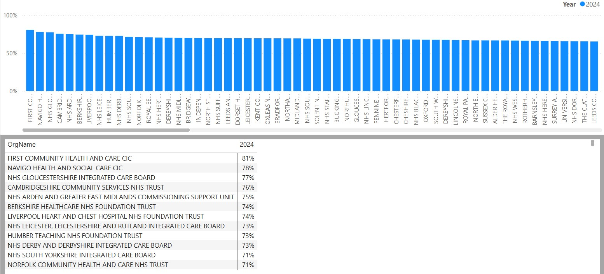
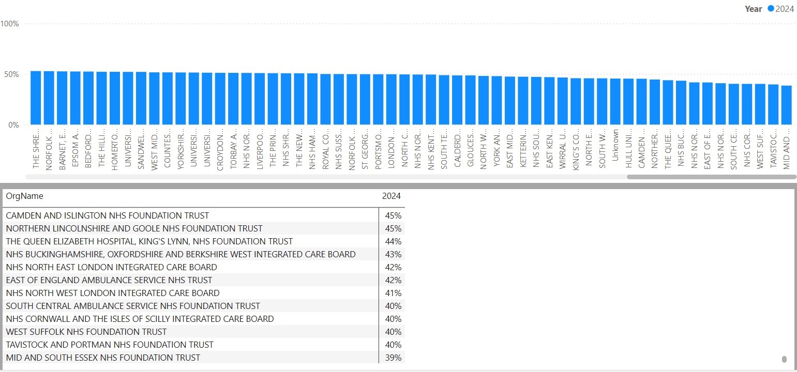

Top Performing NHS Organisations – Survey Question 11a
Survey Question 11a – “My organisation takes positive action on health and well-being” – the table below highlights NHS organisations with the highest proportion of staff who agreed or strongly agreed with this statement.

Health and Wellbeing – Question 11a: % of staff selecting "Agree" or "Strongly Agree"
The table below shows the 12 NHS organisations with the lowest scores for this question.

Link to NHS Staff Survey Data